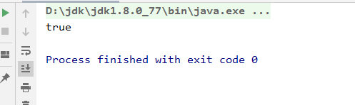
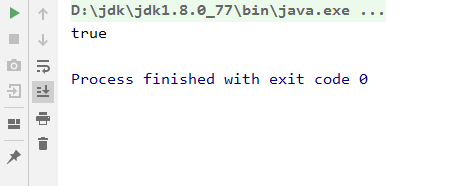
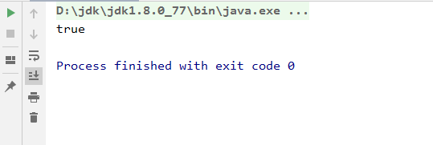
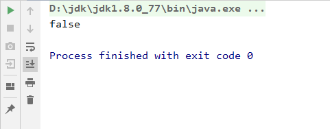

前几天因为一个需求出现了Bug。说高级点也挺高级，说白点也很简单。其实也就是一个很简单的Java基础入门时候的值类型和引用类型的区别。只是开发的时候由于自己的问题，导致小问题的出现。还好突然想起来以前看过一篇对于该问题讲解的博客，才能快速定位问题的位置。防止下次再犯，顺便也就把这个当做笔记记录下来，放入自己的Bug集中。
这个大家应该都是没问题的，很简单。值类型比较是比较值，引用类型是比较地址。对于正常的操作来说，比较值类型我们可以直接使用 == ，引用类型就使用equals来做比较就不会出现问题。
1 /**
2 * 测试Integer
3 */
4 public static void test_Integer(){
5 Integer number_01 = 10;
6 Integer number_02 = 10;
7 System.out.println(number_01.equals(number_02));
8 }
上面的测试结果很明显是true，绝对没有问题的。

1 /**
2 * 测试int
3 */
4 public static void test_Int(){
5 int number_01 = 10;
6 int number_02 = 10;
7 System.out.println(number_01 == number_02);
8 }
上面的测试结果很明显是true，绝对没有问题的。

但是问题就出现在，开发的使用为了防止出现为null的时候会被系统使用0来代替，所以就使用了Integer类型来做操作，并且在比较的时候用了 == 。这就很尴尬了，开始自测完全没出现问题，因为没到达记录数。很开心，把代码提交下班，妥妥的。但是尴尬的事情来了，测试报告出现在了邮箱里面了。
1 /**
2 * 测试Integer
3 */
4 public static void test_Integer(){
5 Integer number_001 = 10;
6 Integer number_002 = 10;
7 System.out.println(number_001 == number_002);
8 }
结果：

1 /**
2 * 测试Integer
3 */
4 public static void test_Integer(){
5 Integer number_001 = 128;
6 Integer number_002 = 128;
7 System.out.println(number_001 == number_002);
8 }
结果：

后面一想，很快确定问题了。是自己的马虎，偷懒使用了 == ，造成这次问题的出现，当改为equals就可以妥妥的回家了。开始自测没问题主要还是因为Integer 的缓存搞的事情。扒拉到Integer的源码，发现里面用了缓存机制，对-128~127的值做了缓存，如果在这个值区间内使用==来做比较的话，比较的就是值了，所以才造成开始以为没问题，后面运行了一段时间后就出现问题了。当不在值区间内就必须使用equals来完成比较。
1 private static class IntegerCache {
2 static final int low = -128;
3 static final int high;
4 static final Integer cache[];
5
6 static {
7 // high value may be configured by property
8 int h = 127;
9 String integerCacheHighPropValue =
10 sun.misc.VM.getSavedProperty("java.lang.Integer.IntegerCache.high");
11 if (integerCacheHighPropValue != null) {
12 try {
13 int i = parseInt(integerCacheHighPropValue);
14 i = Math.max(i, 127);
15 // Maximum array size is Integer.MAX_VALUE
16 h = Math.min(i, Integer.MAX_VALUE - (-low) -1);
17 } catch( NumberFormatException nfe) {
18 // If the property cannot be parsed into an int, ignore it.
19 }
20 }
21 high = h;
22
23 cache = new Integer[(high - low) + 1];
24 int j = low;
25 for(int k = 0; k < cache.length; k++)
26 cache[k] = new Integer(j++);
27
28 // range [-128, 127] must be interned (JLS7 5.1.7)
29 assert IntegerCache.high >= 127;
30 }
31
32 private IntegerCache() {}
33 }
当初面试的时候这种东西应该是背的滚瓜烂熟，绝对可以应对面试。但是一旦开发起来就是各种问题都出现了，而且这种东西还不会报出错日志，纯属开发问题。归总来说还是自己的水平不够，还需要继续提高。下次要防止这种低级问题的出现，很尴尬。同样也是对自己学的东西要融汇贯通，而不是每学一个单独的知识点就够了，没有起到联通的效果。源码扒拉一下还是会加深自己的印象。